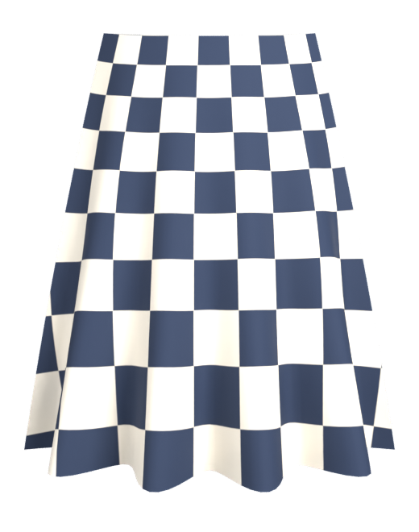

Grid
A checkerboard laid from a marked edge.
What it makes
Squares of one real size on the model, laid from a marked edge.
Each grid bakes two masks: _ and _.
Which edge to mark
Mark one edge per piece, such as the waist. Every UV island with a marked edge gets filled.
Two layouts


Settings
Offset Inward0 mm
Slides the squares away from the edge.
Offset Along0 mm
Slides them along the edge.
Angle0°
Turns them (45° = on the bias).
Cell Size8 mm
The size of a square.
Wobble
Bows the lines slightly at random (0 = straight).
Layout
Follow Loops or Unrolled: see the two renders above.